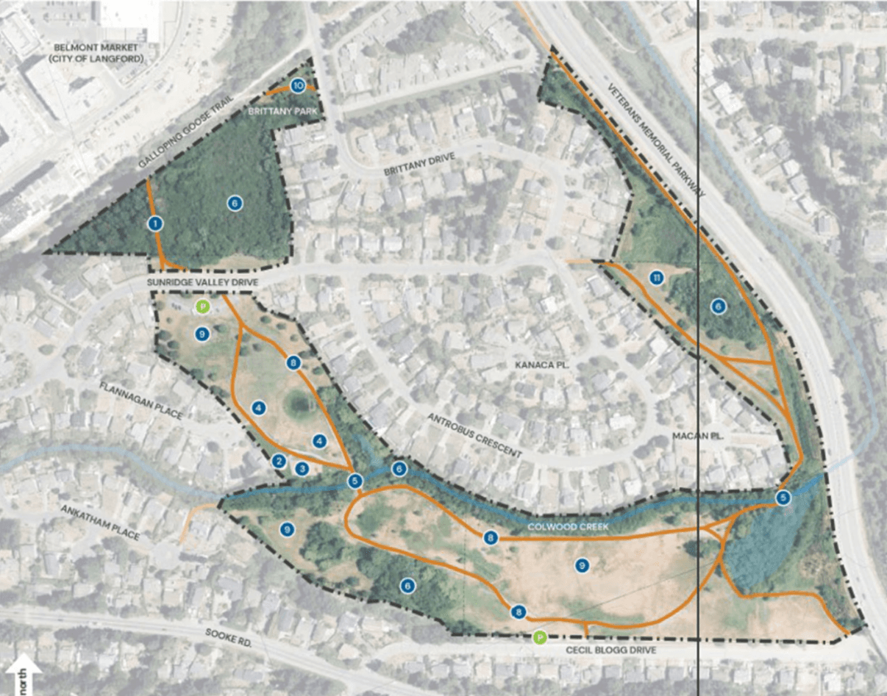

About Titrin Agrisoil Solutions
Full-service agrology and construction solutions built on a decade of public-sector experience in British Columbia.



Titrin Agrisoil Solutions Ltd. was founded by Tishtaar (Tish) Titina, P.Ag., a Professional Agrologist with over 10 years of experience working across agricultural land use planning, regulatory compliance, and environmental permitting in British Columbia.
Tishtaar holds a Bachelor of Science in Plant and Soil Science and a Master of Science in Land and Water Systems, both from the University of British Columbia (Vancouver). He is a registered Professional Agrologist (P.Ag.) in good standing with the BC Institute of Agrologists (BCIA).
Prior to establishing Titrin Agrisoil Solutions, Tishtaar spent more than a decade working between the Agricultural Land Commission (ALC) and the City of Richmond, where he was directly involved in compliance and enforcement, application review, policy interpretation, and soil and land alteration oversight on agricultural and environmentally sensitive lands.
This public-sector experience gives him a regulator-informed perspective that helps clients navigate complex approval processes efficiently and responsibly.
Through Titrin Agrisoil Solutions, Tishtaar provides agricultural assessments, farm plans, ALC applications, municipal permitting, and soil and land development advisory services, supporting projects from early feasibility through to implementation.
Credentials & Affiliations
P.Ag. — Professional Agrologist, registered with the BC Institute of Agrologists
View BCIA Profile →Bachelor of Science in Plant and Soil Science — University of British Columbia (Vancouver)
Master of Science in Land and Water Systems — University of British Columbia (Vancouver)
10+ years combined municipal and ALC experience